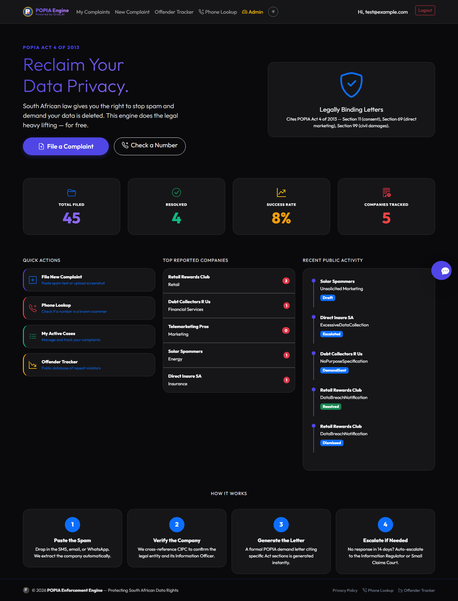
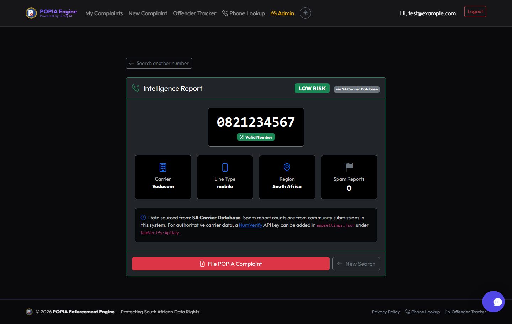

A data-protection enforcement workspace: complaint intake and evidence, case triage, a phone-number reputation desk, and an append-only audit log — built for POPIA workflows.

Intake with category, severity and evidence; triage, investigation and resolution states; 15 active cases in the demo account.
28 public complaints and resolution stats, grouped by company and violation type.
Carrier, line type, region, spam reports and a risk band from a synthetic SA carrier database.
Every action is written to an append-only audit log tied to the actor and case.
dotnet build — 0 errors; app starts, creates the schema and seeds companies, complaints and demand letters.0821234567 → low risk, Vodacom, valid, 0 reports).
dotnet run --urls http://127.0.0.1:5000. Seeded login: test@example.com. Demonstration data only — not a legal finding and not connected to the Information Regulator.